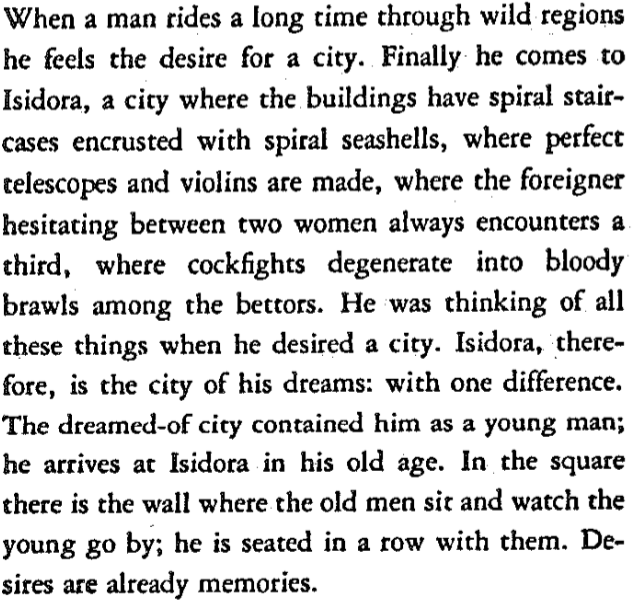
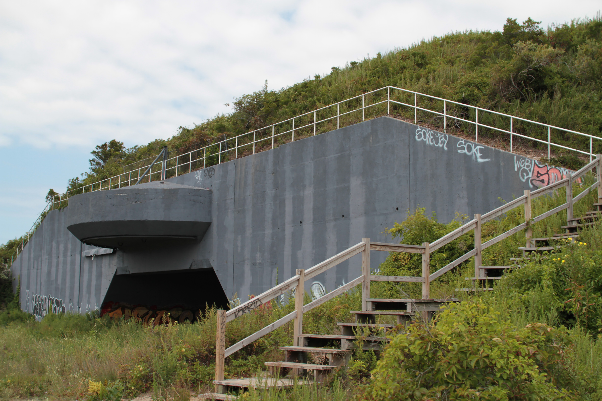
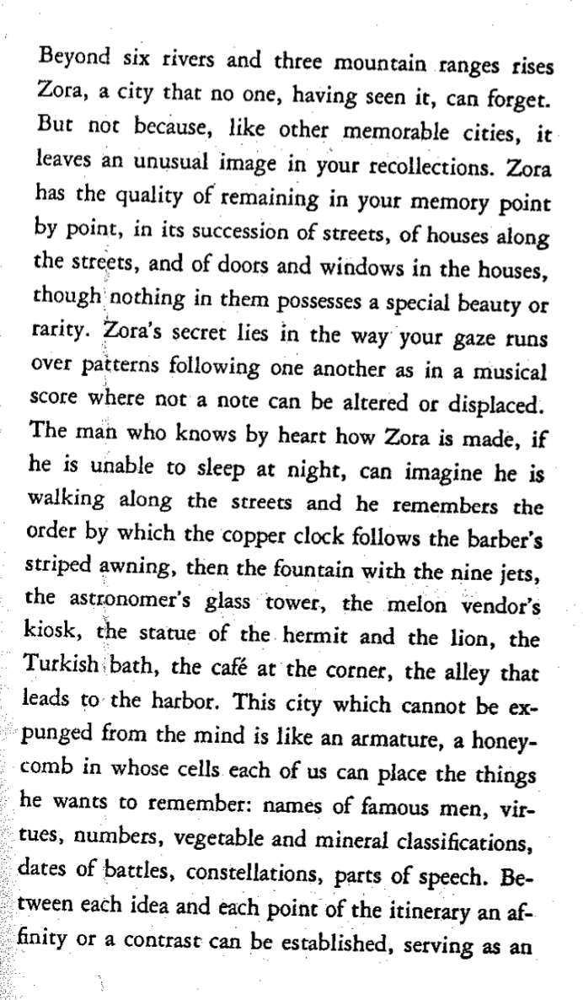
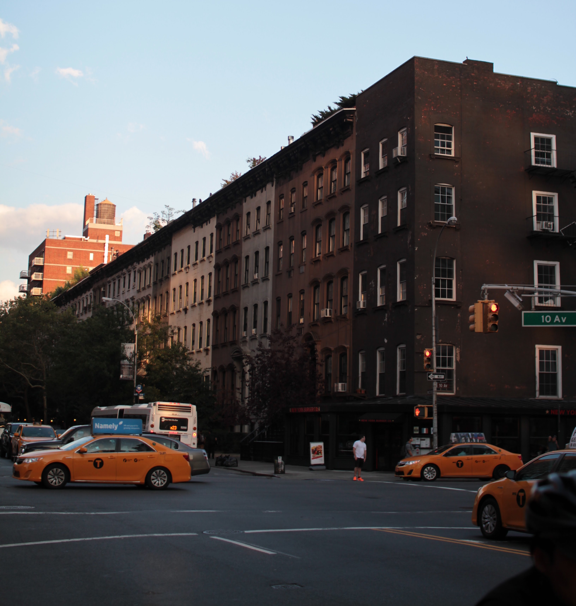
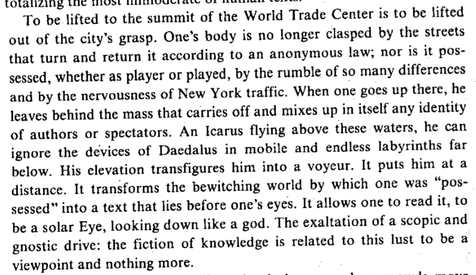
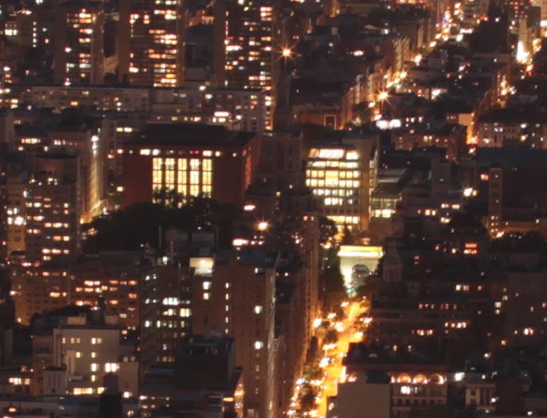
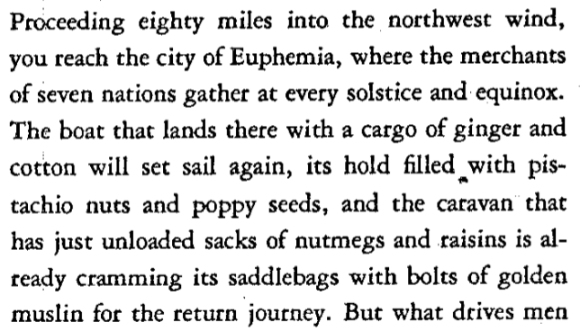

Contemporary and Modern Cities
The goal of this project is to compare descriptions of cities from earlier texts from our course to different parts of New York City as we know it today. I will do so by showing the text, giving my interpretation of it, and then showing photographs that I have taken in NYC that I think closely resemble the descriptions in the text. I will then explain exactly how the photos relate. I will continuously do this for about 6 different pieces of text. Since this is a creative project, I am incorporating photography and web development to present my idea.
This project can be viewed for the duration of this semester at jhishan.com/creativeproject.html, and it is coded from scratch.
Isidora, Page 8, Invisible Cities, Calvino
Isisdora sounds like a certain aspect of New York. As we read the text, we get the feeling of a city that is nitty and gritty. We also get the sense of luxury. The spiral staircase represents luxury, while the cockfights represents the nitty and gritty details of living in this city. That seems to describe New York in a way. New York has areas of extensive privilege and luxury, while as at the same time, the less ideal details about the city paint a fuller picture of everything this city has to offer. Combined, the two ideas form a unique experience that is New York, with the glamour and the hardship.
Calvino goes on to say that by the time one arrives to Isidora, they are old, and have to watch the young go by. He explains “desires are already memories”. I had a particularly hard time understanding this. My current interpretation is that this means Isidora creates an environment where there is a cycle of desire. As a person grows older, those desires become their memories. They then watch their younger counterparts go through the same thing. In terms of New York, I can definitely see a cycle of madness. In some sense, no matter what you do in this city, someone else has already done it.

This is a picture of a spiral staircase. I took this picture in the new Whitney museum. I talked earlier about how the spiral staircase in the text represented luxury. Similarly, the Whitney museum to me represents luxury. This cool spiral staircase is one of the few many nice architectural features of The Whitney. The high ceilings, outside views, and exquisite art, all add to the luxurious aspect of this city.
On the other end of the spectrum, we have parts of the city that aren't so luxurious and maintained. These are photos from an abandoned military fort in Queens. It now primarily serves as a spot for teenagers to fool around and explore. Like Isidora, New York has all ends of the spectrum.
Zora, Page 15, Invisible Cities, Calvino
Zora is an unforgettable city due to its distinct physical features. What stuck out to me is that Calvino was not pointing out particular things about Zora, but rather how particular things come together to form beautiful patterns and experiences. He writes “Zora’s secret lies in the way your gaze runs over patterns”. NYC, similarly, supports this thought, specifically in architecture, which is something Calvino also focuses on.
I took this photo in Chelsea. Like Zora, you can almost notice a pattern in the building colors.

I took this photo close to where I live in Queens. What I appreciate about this photo is how the houses look together. Looking any house by itself wouldn't be too appealing, but seeing the pattern of similar houses in order is much more exciting and memorable.
Despina, Page 17, Invisible Cities, Calvino

Despina is a oxymoron of some sort. If you approach by camel, you see what looks like a ship, and if you approach by ship, you see what looks like a camel. With Despina, it seems Calvino is trying to explain an abstract idea, rather than actually describe any city. This idea is that perspective of an entity depends on how you approach it. Interestingly enough, in our first week of class, we read DeCerteau’s “Practice of Everyday Life” which talks about a certain perspective of New York. Specifically, the way New York looks from the top of the former world trade center.
DeCerteau is explaining how the perspective from above is entirely different. He uses the word “voyeur” to describe what the person becomes. I believe he is saying that from above, you can see everyone, whereas everyone from below cannot see you. To bring it back to Despina, we see that DeCerteau proposes a similar idea. Like Despina, New York City as seen from a very high vantage point is not the same as New York City from a low vantage point. The perspectives are entirely different.
Here are two photos that I took from atop the empire state building, which gave me access to one of the highest vantage points in this city. Observe how small everything looks from so high above. Cars, people(if you look hard enough), and even other buildings are extremely tiny.
For fun, I would like you to look for Bobst Library in the photos above. See if you can spot it.

BOBST!

It is important to notice how small Bobst looks from such a high vantage point.
Here is a photo of Bobst from within Bobst. Observe how big Bobst looks now.
insert photo of inside bobst here
My point here is to show how thoughts change depending on where you are, similar to Despina.
Euphemia, Page 36, Invisible Cities, Calvino
Euphemia is the trade city. It is where you go to get what you need and sell what you have. Calvino describes it afterwards not only for the trade, but the stories that are told in the city. He describes the conversations force memories to come back to a person.

This is a photo of downtown manhattan. It may be a bit difficult to see, but there are piers going out to the water. And right behind the piers is Wall St, housing the largest stock exchange in the world. Euphemia can be very directly compared to downtown Manhattan. The piers downtown used to be how New York City received all its goods. They are no longer used for trade because transporting goods by trucks is cheaper.
Bruni Oration

The way Bruni describes Florence describes a lot about Bruni himself. He is a Florentine person at heart. I am interested in the Oration because in describing Florence, Bruni reveals much more about Florentines themselves. This is important because everything similarly, the people that make up New York City, is what makes the city such a unique place.
The text I choose specifically talks specifically about the pride and allegiance of the Florentine people to Florence. He explains that it is easy to tell someone is from Florence, and additionally, that a person from Florence would probably not live anywhere else.
This description of a Florentine person screams “New Yorker”.